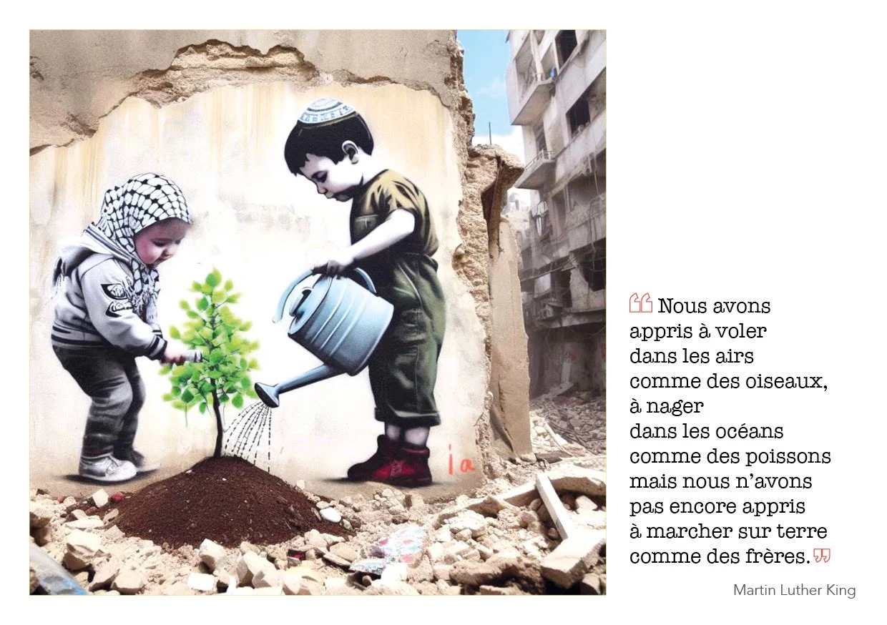

Publication d’archives
Pour cette année 2024, nous présentons à chacune et chacun d'entre vous, tous nos vœux de bonheur, de santé et…
Date indiquée par Facebook · 3 janvier 2024
Texte conservé avec la publication
Pour cette année 2024, nous présentons à chacune et chacun d'entre vous, tous nos vœux de bonheur, de santé et de joie.
Nous formulons aussi le vœu que cette nouvelle année apporte partout dans le monde, la paix, la fraternité et la solidarité entre les peuples et entre les humains.

Sources
Archive rouge · export Facebook · AR-0002-FB-01508
À lire aussi · QUELLE ÉPOQUE ! Oui en effet.